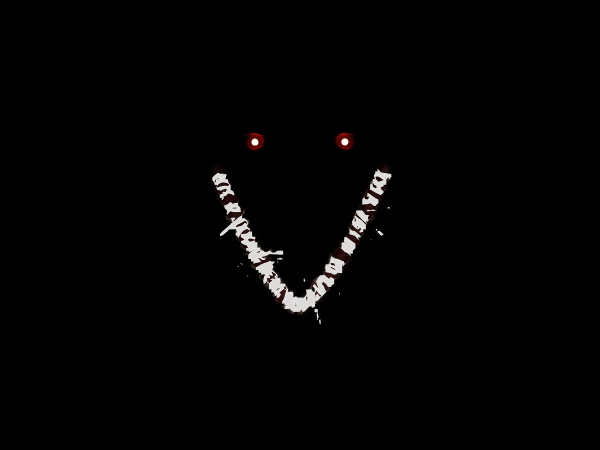
De noche el cuerpo negro desaparece. Solo quedan dos puntos rojos, pequeños y muy separados, y debajo una sonrisa de oreja a oreja llena de agujas blancas. En Roblox los dientes son una malla aparte que pasa a Neon de noche.
La izquierda es tu imagen; la derecha, el modelo de juego (el mismo que va a Roblox) renderizado desde un ángulo parecido.
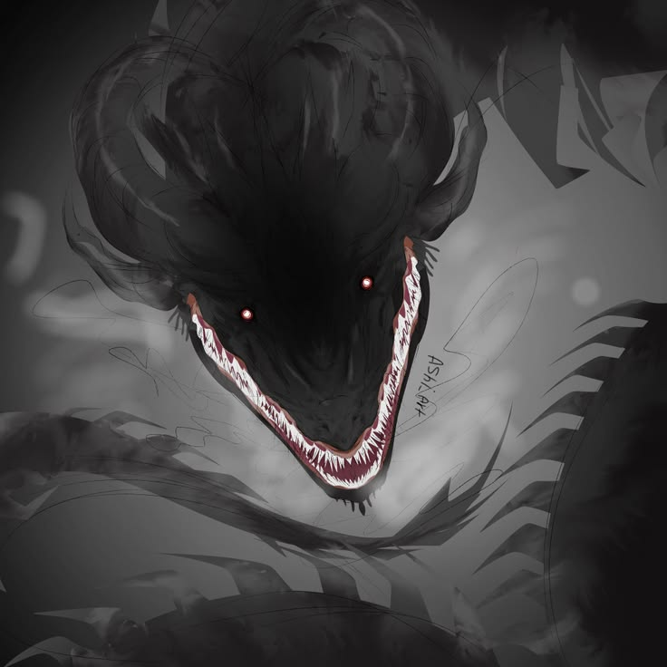
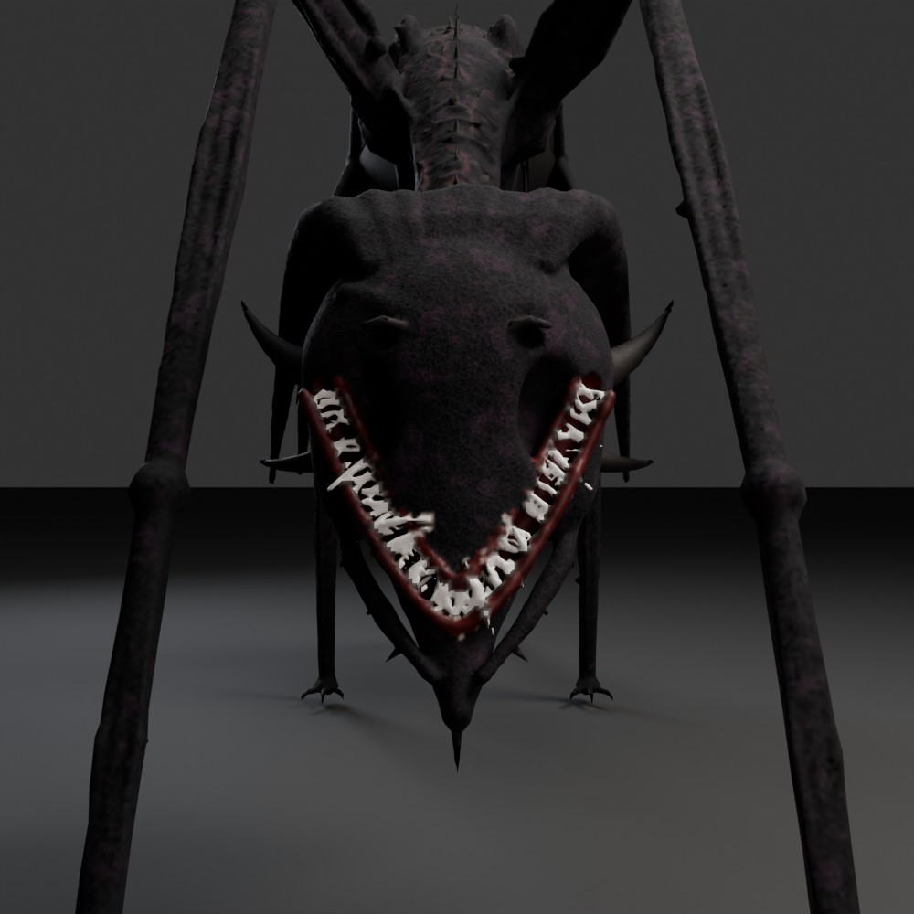
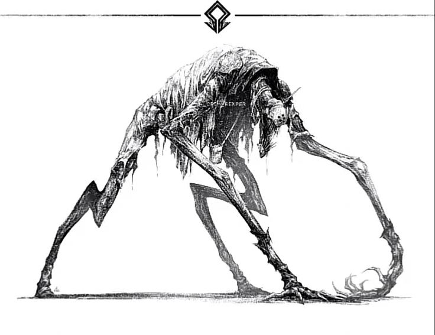
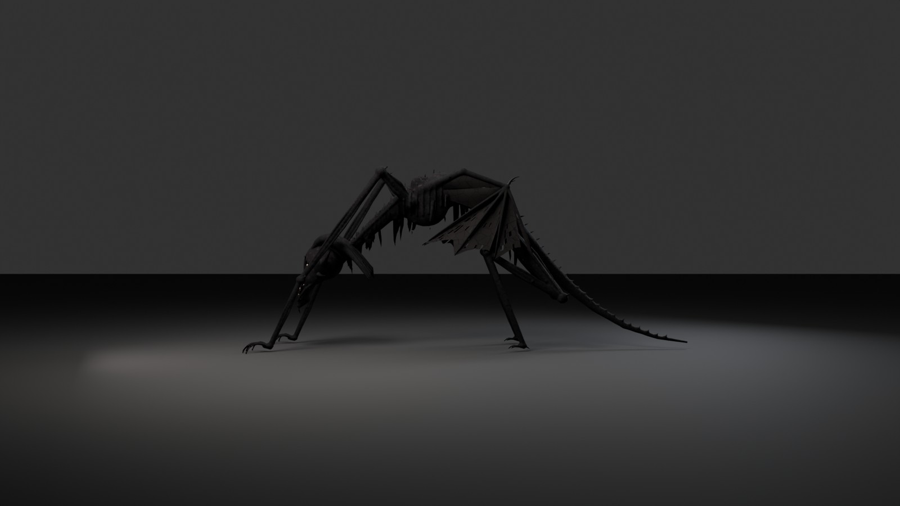
Es el archivo exportado para Roblox: cinco mallas con skinning (la cabeza tiene malla y textura propias), 35 huesos y texturas horneadas. Las animaciones usan los mismos datos que el script de Studio.
«Te mira» hace que la cabeza y el cuello sigan a la cámara. «Oscuridad» apaga las luces: solo quedan los ojos rojos y la sonrisa. «Visión nocturna» lo muestra como lo verá el jugador con las gafas puestas.
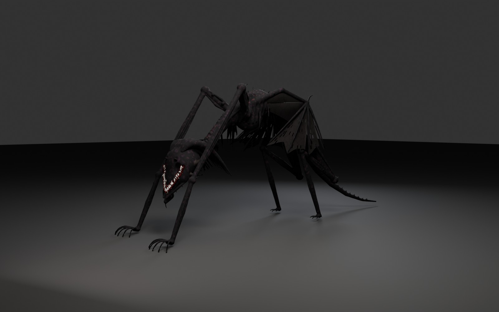
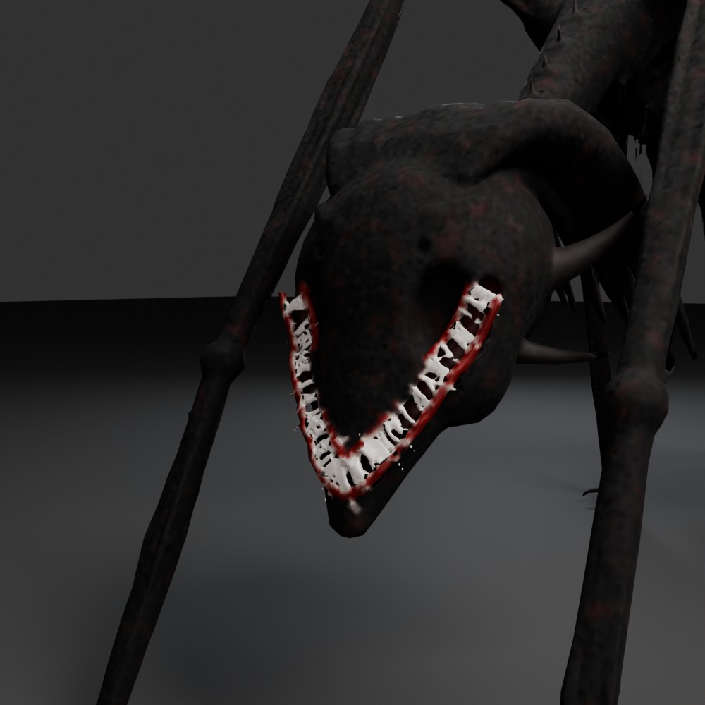
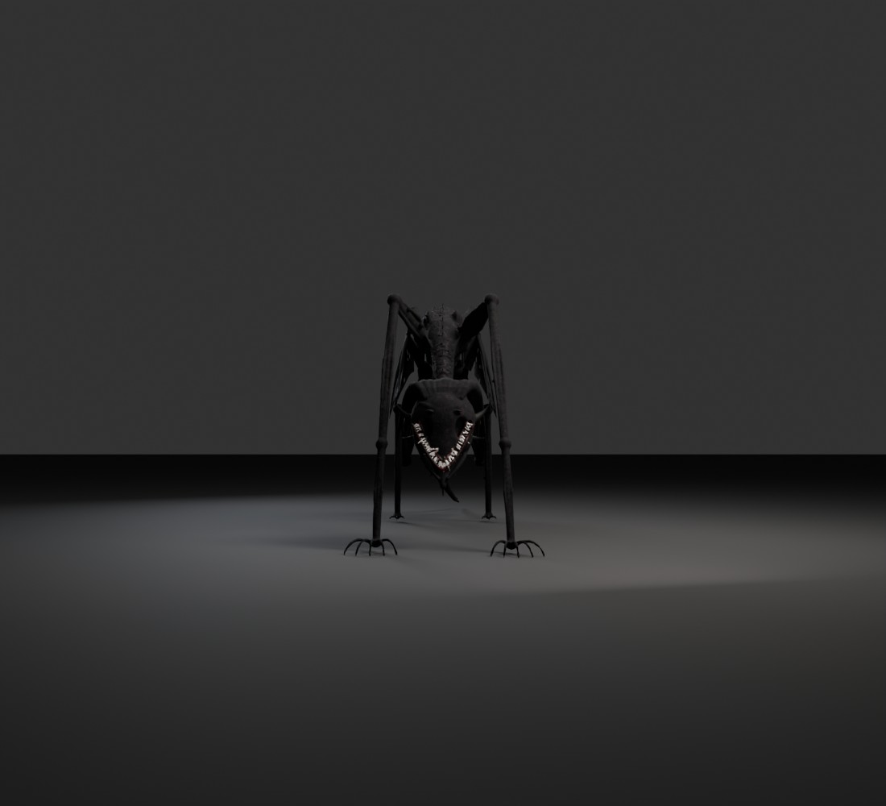
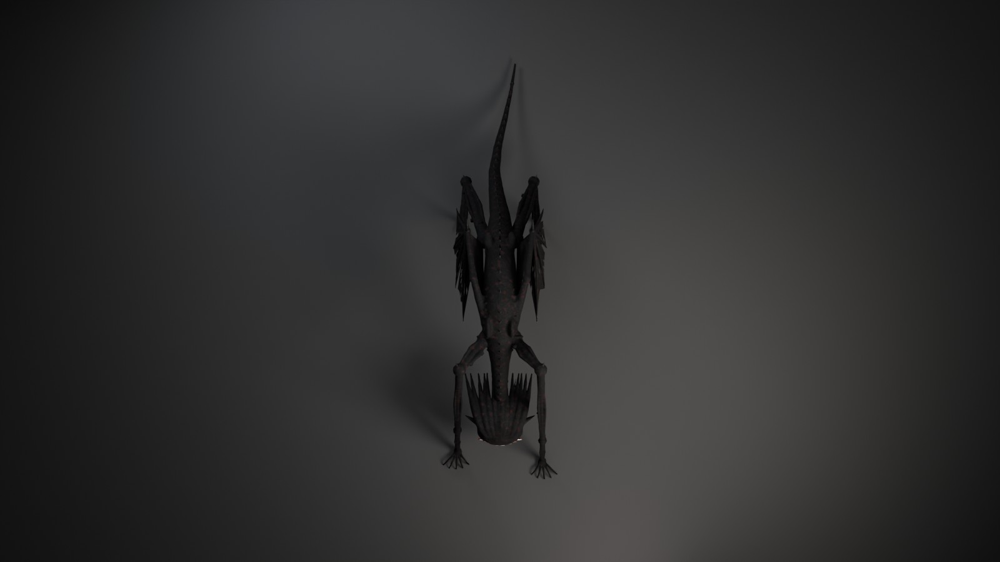
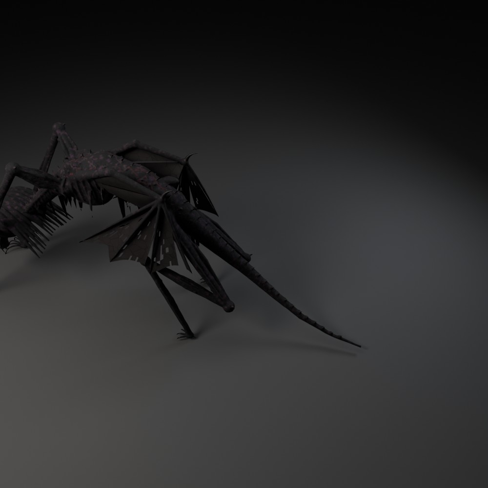
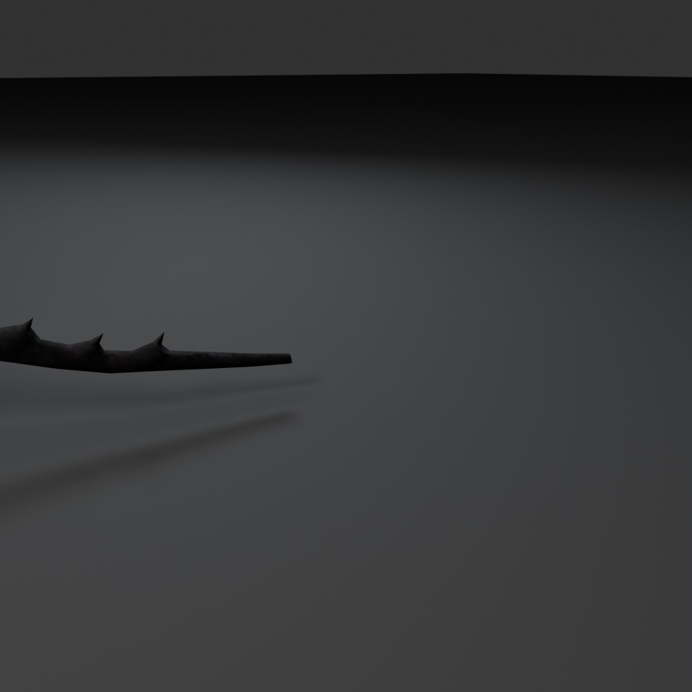
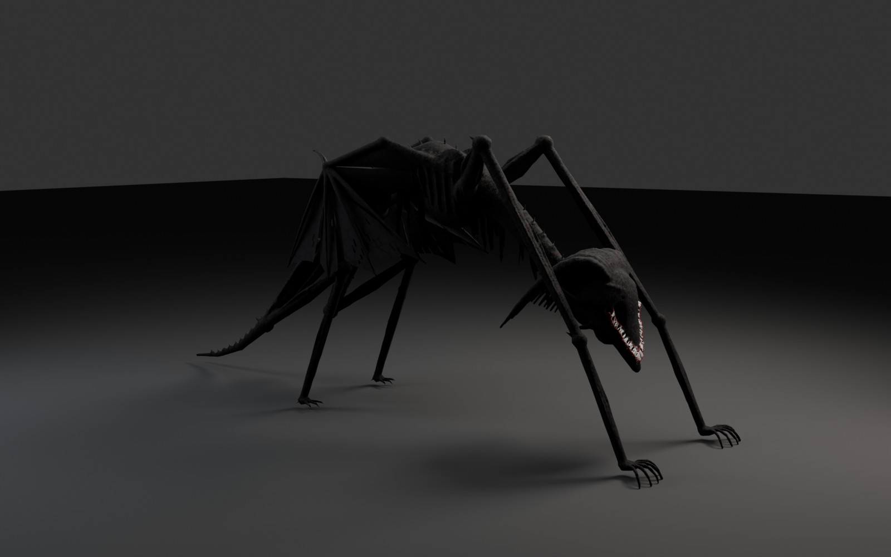
Hay un solo Dragón Sombrío en el servidor y todos los jugadores lo ven en el mismo sitio. Cada jugador envía hacia dónde mira su cámara, así el dragón sabe quién lo está viendo. No persigue de forma constante y no repite siempre lo mismo: los tiempos son aleatorios y evita la última opción que eligió.
No hace daño: es terror psicológico. La lógica se ha probado simulando 4 horas de juego. Nunca se mueve mientras alguien lo mira, cambia de postura solo cuando nadie lo ve, deja al menos 4 minutos entre persecuciones y está visible menos de un tercio del tiempo.
Sintetizados desde cero para este dragón. Hay que subirlos a Roblox y pegar sus ids en el instalador. Los de ambiente suenan cada vez en un punto distinto alrededor del jugador, para que cueste saber de dónde vienen.
Root └─ Hips ├─ Spine1 ─ Chest │ ├─ Neck1 ─ Neck2 ─ Neck3 ─ Head ─ Jaw │ ├─ LegFL_Upper ─ LegFL_Lower ─ LegFL_Foot │ ├─ LegFR_Upper ─ LegFR_Lower ─ LegFR_Foot │ ├─ WingL_Arm ─ WingL_Fore ─ WingL_Hand │ └─ WingR_Arm ─ WingR_Fore ─ WingR_Hand ├─ LegBL_Upper ─ LegBL_Lower ─ LegBL_Foot ├─ LegBR_Upper ─ LegBR_Lower ─ LegBR_Foot └─ Tail1 ─ Tail2 ─ … ─ Tail8 Mallas: Body · Skull · Teeth · WingL · WingR (skinning) Ojos: EyeLPoint · EyeRPoint (puntos Neon rojos que siguen a Head)
SetLookTarget).Import 3D → ShadowDragon.fbx → Rig Type: Custom, sin combinar mallas.sounds/*.ogg y las texturas, y pega sus ids en SOUND_IDS y MAPS al principio del instalador.InstallShadow.lua en la Command Bar.ShadowPerch (o dentro de Workspace.ShadowPerches) junto a árboles y zonas oscuras. Son los sitios preferidos para aparecer.